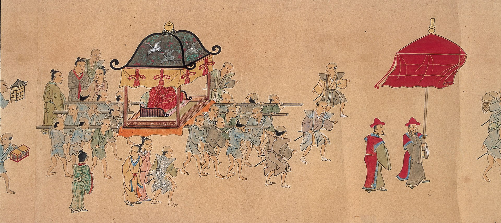
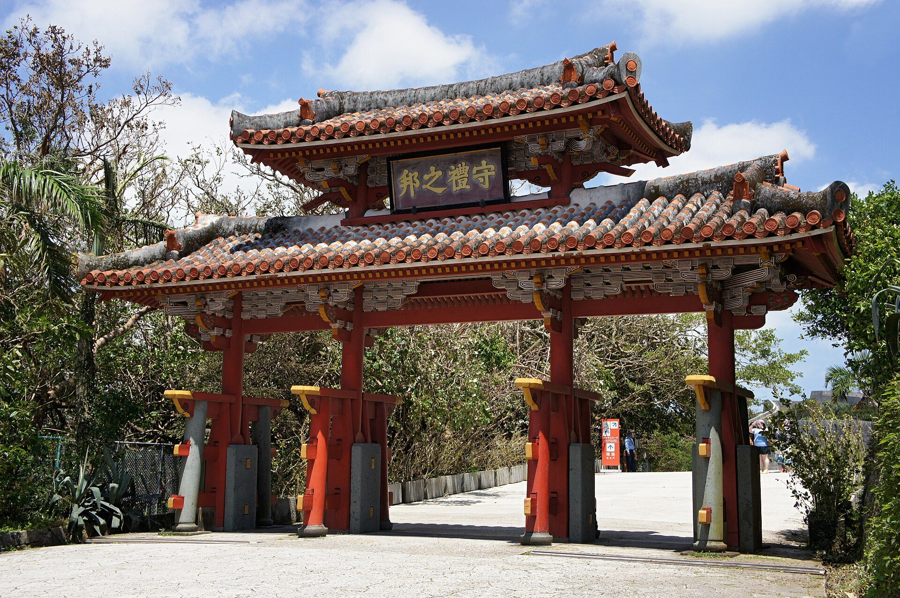

OKINAWA
About
Nagoya (名古屋市, Nagoya-shi, [naꜜɡoja] ⓘ) is the largest city in the Chūbu region of Japan. It is the fourth-most populous city in Japan, with a population of 2.3 million in 2020, and the principal city of the Chūkyō metropolitan area, which is the third-most populous metropolitan area in Japan with a population of 10.11 million.[3] Located on the Pacific coast in central Honshu, it is the capital and most populous city of Aichi Prefecture, with the Port of Nagoya being Japan's largest seaport.is the largest city in the Chūbu region of Japan. It is the fourth-most populous city in Japan, with a population of 2.3 million in 2020, and the principal city of the Chūkyō metropolitan area, which is the third-most populous metropolitan area in Japan with a population of 10.11 million.[3] Located on the Pacific coast in central Honshu, it is the capital and most populous city of Aichi Prefecture, with the Port of Nagoya being Japan's largest seaport.
History
Okinawa Island (沖縄島, Okinawa-jima, Okinawan: 沖縄/うちなー, Uchinaa[4] Kunigami: ふちなー, Fuchináa), officially Okinawa Main Island (沖縄本島, Okinawa-hontō),[5] is the largest of the Okinawa Islands and the Ryukyu (Nansei) Islands of Japan in the Kyushu region. It is the smallest and least populated of the five main islands of Japan.[6] The island is approximately 106 kilometres (66 mi) long, an average 11 kilometres (7 mi) wide,[7] and has an area of 1,206.98 square kilometers (466.02 sq mi). It is roughly 640 kilometres (350 nmi; 400 mi) south of the main island of Kyushu and the rest of Japan. It is 500 km (270 nmi; 310 mi) northeast of Taiwan. The total population of Okinawa Island is 1,384,762.[3] The greater Naha area has roughly 800,000 residents, while the city itself has about 320,000 people. Naha is the seat of Okinawa Prefecture on the southwestern part of Okinawa Island. Okinawa has a humid subtropical climate..
Culture
As of September 2009, the Japanese government estimates the population at 1,384,762,[3] which includes American military personnel and their families. The Okinawan language, called Uchināguchi, is spoken by adults only,[25] but several local groups promote the use of the Okinawan language by younger people.[26] Whereas the northern half of Okinawa Island is sparsely populated, the south-central and southern parts of the island are markedly urbanized—particularly the city of Naha and the urban corridor stretching north from there to Okinawa City. The population distribution is approximately 120,000 in northern Okinawa, 590,000 in central Okinawa and 540,000 in southern Okinawa. It has a high population density of 1,014.93/km2.[27]As of September 2009, the Japanese government estimates the population at 1,384,762,[3] which includes American military personnel and their families. The Okinawan language, called Uchināguchi, is spoken by adults only,[25] but several local groups promote the use of the Okinawan language by younger people.[26] Whereas the northern half of Okinawa Island is sparsely populated, the south-central and southern parts of the island are markedly urbanized—particularly the city of Naha and the urban corridor stretching north from there to Okinawa City. The population distribution is approximately 120,000 in northern Okinawa, 590,000 in central Okinawa and 540,000 in southern Okinawa. It has a high population density of 1,014.93/km2.[27]
Architecture
It was first built in the 16th century, and the structure of the gate is similar to that of Chinese three-bay turret gates, and is covered with a red tiled hip roof. The four Hanzi framed on the gate - Shu, rei, no, and kuni, which mean 'Land of Propriety', were added to the gate long after it was built. It was also called Shurimon (首里門, "Shuri gate") and Wī nu Aijō (上ぬ綾門, "Beautiful gate at the upper part") in Okinawan.[1][2] The gate reflects strong Chinese influence, alongside indigenous religious traditions.It was first built in the 16th century, and the structure of the gate is similar to that of Chinese three-bay turret gates, and is covered with a red tiled hip roof. The four Hanzi framed on the gate - Shu, rei, no, and kuni, which mean 'Land of Propriety', were added to the gate long after it was built. It was also called Shurimon (首里門, "Shuri gate") and Wī nu Aijō (上ぬ綾門, "Beautiful gate at the upper part") in Okinawan.[1][2] The gate reflects strong Chinese influence, alongside indigenous religious traditions.It was first built in the 16th century, and the structure of the gate is similar to that of Chinese three-bay turret gates, and is covered with a red tiled hip roof. The four Hanzi framed on the gate - Shu, rei, no, and kuni, which mean 'Land of Propriety', were added to the gate long after it was built. It was also called Shurimon (首里門, "Shuri gate") and Wī nu Aijō (上ぬ綾門, "Beautiful gate at the upper part") in Okinawan.[1][2] The gate reflects strong Chinese influence, alongside indigenous religious traditions.
